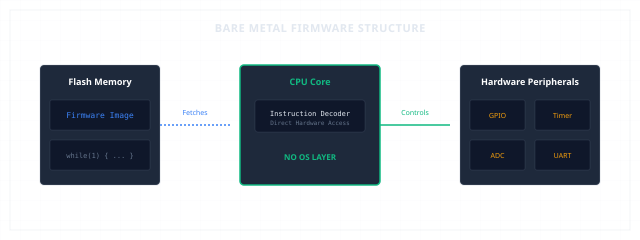
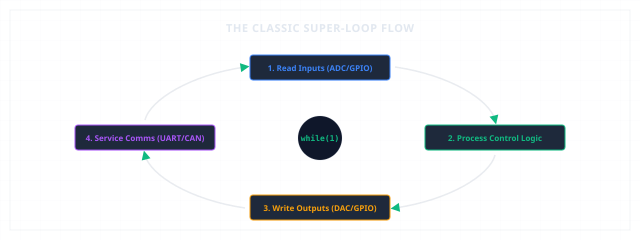
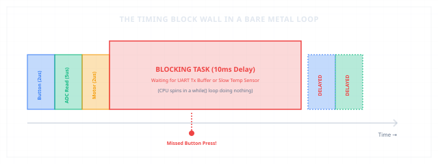

Integration
When One Loop Was Enough
The first software architecture of embedded systems.
Bare MetalSoftware ArchitectureSuper-loopMultitaskingEmbedded Systems
1. The Hardware Is Ready
We have spent chapters assembling the physical machine. We designed the silicon gates, configured the system clocks, wired up communication buses, and added watchdog monitors to protect the device from itself. The hardware is ready. But at this moment, the processor is silent. At power-on, it simply loads the reset vector, initializes the stack pointer, and waits.
Without software to orchestrate its behavior, a microcontroller is nothing more than expensive sand. The hardware provides the capability, but software must provide the purpose. How do we organize the instructions that bring this silicon to life?

Bare Metal Firmware Structure Overview
2. The First Software
When personal computers run software, they do so under the supervision of a massive operating system. But in early embedded systems, there were no operating systems. The software had to run directly on the 'bare metal' of the hardware.
The simplest possible software architecture is a sequence of direct instructions. We fetch a sensor value, perform a calculation, and write the output to a pin. But an embedded system cannot simply execute these instructions once and shut down; it must monitor and control its environment indefinitely. To achieve this, the entire program is wrapped in a loop that never ends:
int main(void) {
// Initialize hardware clocks and peripherals
hardware_init();
while (1) {
// Execute code repeatedly forever
read_sensors();
update_outputs();
}
}
This simple infinite loop — the super-loop — became the heartbeat of early embedded systems. It runs as fast as the processor can fetch instructions, executing the same sequence of tasks over and over.
3. Growing Responsibilities
In a basic device, the super-loop is elegant and short. But as products grow, the loop becomes the repository for every new feature. A single loop must now handle a multitude of tasks:
* Inputs: Check if a button is pressed; sample the ADC channel for temperature.
* Logic: Run a filter on the ADC readings; calculate the next motor velocity.
* Outputs: Write a new duty cycle value to the PWM timer; toggle status LEDs.
* Communications: Check if a byte has arrived in the UART buffer; parse a CAN frame.
* Diagnostics: Feed the watchdog timer; monitor the battery voltage.
Every single one of these tasks is placed inside the same while(1) block, executed sequentially, one after another.

The Classic Super-Loop Task Sequence
4. Why It Worked
It is tempting to view Bare Metal as a primitive, outdated architecture. But in engineering, simplicity is a feature, not a bug. Bare Metal was, and remains, an exceptionally powerful design choice for several reasons:
* Zero Overhead: There is no operating system scheduler taking up CPU cycles. Every clock cycle is dedicated to your application code.
* Tiny Memory Footprint: A super-loop does not need task control blocks, stacks for each thread, or message queues. It runs entirely on a single system stack, preserving precious SRAM.
* Total Predictability: Because tasks run in a fixed sequence, there are no unpredictable context switches or priority inversions. The path of execution is completely deterministic.
* Easy Debugging: If the system halts, the call stack tells you exactly which instruction inside the loop caused the failure.
For millions of successful products — from digital thermometers and microwave ovens to automotive sensors — Bare Metal is not a compromise; it is the optimal engineering solution.
5. The Hidden Cost
The vulnerability of a sequential loop is that it assumes every task is fast. In a super-loop, a delay in one task becomes a delay for the entire system. This is the 'Timing Wall'.
Consider what happens if we add a slow task, like reading an external temperature sensor over I2C. The sensor takes 10 milliseconds to perform a conversion. If the CPU spins in a blocking while-loop waiting for the I2C transfer to complete, the entire loop stops. During those 10 milliseconds, the buttons are not polled, the motor PWM is not updated, and serial bytes are missed. If a user presses a button during that window, the press is completely lost. The tasks are cooperatively linked: if one misbehaves, the timing of the entire device is destroyed.

Timing Delays and Missed Events in a Crowded Loop
6. Architecture Before Frameworks
Bare Metal is not simply 'no operating system.' It is a active architectural choice that forces the developer to become the scheduler. To keep the loop running smoothly, the engineer must write non-blocking code. Instead of waiting for a timer to expire, they poll a hardware flag. Instead of waiting for a UART transmission to finish, they write bytes to a software buffer and let interrupts handle the hardware registers.
This approach teaches fundamental embedded systems thinking. It forces the developer to understand the timing budget of every line of code, the bandwidth of the bus, and the cooperative relationship between hardware peripherals and CPU cycles.
7. Real Embedded Examples
We can observe Bare Metal super-loops running reliably in many everyday systems:
* Simple Sensor Nodes: A remote temperature transmitter reads an SPI sensor, formats a packet, transmits it via a sub-GHz radio, and enters a low-power sleep mode, repeating this sequence once per minute.
* Digital Thermometers: The loop continuously samples an ADC channel connected to a thermistor, converts the readings to a temperature value using a lookup table, and updates a segment LCD driver.
* Brushless Motor Controllers: A high-speed super-loop runs the field-oriented control (FOC) mathematical algorithms to adjust motor phase voltages at 20 kHz. Because the math must be completed in under 50 microseconds, there is no room for operating system overhead.
* Battery Chargers: The controller loops continuously to check battery voltage, current, and temperature, adjusting the output buck converter's PWM duty cycle to maintain a safe charging curve.
The Multitasking Horizon
For years, one loop was enough.
But as embedded products grew, communication requirements multiplied, displays became graphical, networking appeared, and diagnostics expanded.
One processor core now carried dozens of independent responsibilities. The challenge was no longer writing code for a peripheral; it was organizing the execution of independent, parallel activities without letting one delay the other.
That challenge eventually led to the development of Operating Systems.
When a single loop must carry every burden, a single delay becomes a universal failure.